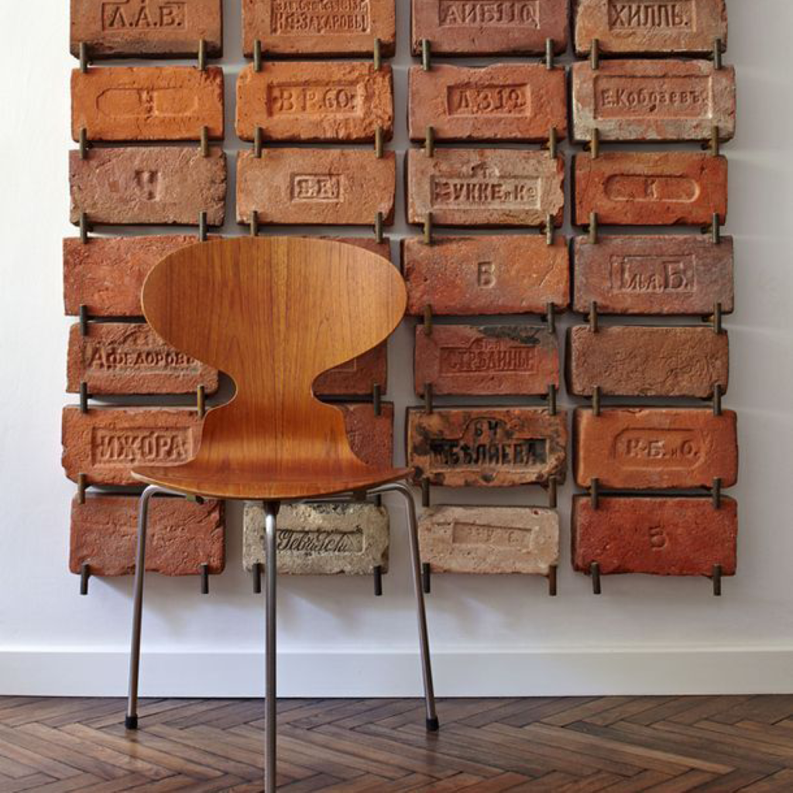

Zotero и облачные сервисы для совместной работы с литературой

Zotero — бесплатное программное обеспечение с открытым исходным кодом для управления библиографическими данными и сопутствующими исследовательскими материалами, такими как файлы PDF и ePUB. Среди функций — интеграция с веб-браузером, онлайн-синхронизация, создание внутритекстовых ссылок, сносок и библиографий, встроенные средства чтения PDF, ePUB и HTML с возможностью добавления аннотаций, редактор заметок, а также интеграция с текстовыми редакторами.
Организация данных в Zotero
Перед тем, как перейти к практическому описанию организации совместной работы над литературой внутри исследовательской группы, рассмотрим, как Zotero организует библиографические данные.
Доступно два типа библиотек (см. левую панель на рис. 1):
- Моя библиотека (My Library) – личная библиотека каждого пользователя. Источники из этой библиотеки не доступны другим пользователям.
- Групповые библиотеки (Group Libraries) – библиотеки, созданные для совместной работы над литературой внутри исследовательской группы. Источники из этих библиотек видны всем участникам внутри группы.
Все источники Item в каждой библиотеке могут быть организованы в коллекции и подколлекции. Коллекции Collection – это просто способ организации источников, в отличие от классических папок один и тот же источник может находиться в нескольких коллекциях одновременно без дублирования данных. Например, на рис. 2 источник Item 4 находится одновременно в двух коллекциях: Collection 1 и Collection 3.
В Zotero данные каждого источника состоят из двух частей:
- Метаданные — информация об источнике, такая как автор, название, год издания, журнал, том, номер страницы и т.д.
- Вложенные файлы — файлы, связанные с источником, такие как PDF-версии статей, изображения и другие документы.
Все метаданные источников (в том числе Info, Abstract, Notes, Tags, Related — ccылки на другие источники в библиотеке) хранятся в базе данных на сервере Zotero и синхронизируются между всеми вашими устройствами, где установлена программа. Объем хранения метаданных неограничен и бесплатен как в Моей библиотеке, так и в Групповых библиотеках.
Вложенные файлы могут храниться тремя способами:
- Stored File — сохраненные файлы, доступны два варианта хранения:
- на сервере Zotero (бесплатно 300 МБ).
- на стороннем WebDAV-сервере (объем зависит от провайдера WebDAV).
- Linked File — внешние ссылки на файлы на вашем компьютере.
- Web Link — ссылки на интернет-ресурсы (объем неограничен и бесплатен).
В Моей библиотеке вы можете использовать все три способа хранения вложенных файлов.
В Групповых библиотеках Zotero хранит только метаданные источников, а вложенные файлы сохраняет как Stored File на своем сервере или Web Link. Вложенные файлы, сохраненные как Linked File1 и сохраненные файлы на WebDAV-сервере в Групповых библиотеках не поддерживаются.
1 Этой проблеме посвящено обсуждение на форуме Linked files disabled in group libraries. На момент чтения статьи такая возможность может быть реализована.
Мотивация этой статьи заключается в том, чтобы в Моей библиотеке обойти ограничение в 300 МБ с использованием двух доступных технологий: Stored File c WebDAV-сервером и/или Linked File для хранения вложенных файлов на компьютере с использованием облачного сервиса.
Рекомендуется использовать WebDAV, т.к. при этом файлы синхронизируются автоматически и доступны на всех устройствах без ручной настройки одинаковых путей, также меньше риск «потерять» вложения из-за переименования файлов или смены путей.
Связанные файлы Linked File дают больше ручного контроля, но требуют внимания, при этом пути к файлам должны быть одинаковыми на всех устройствах, если вы планируете работать с ними на разных компьютерах.
В табл. 1 для примера приведен неполный перечень облачных сервисов, которые можно использовать для хранения вложенных файлов с указанием бесплатного объема и поддержки протокола WebDAV.
| Облачный сервис | Страна | Бесплатный объем, ГБ | Поддержка WebDAV |
|---|---|---|---|
| TeraBox | en | 1024 | ❌ |
| InfiniCLOUD | en | 20 | ✅ |
| Google Drive | en | 15 | ❌ |
| СберДиск | ru | 15 | ❌ |
| Koofr | en | 10 | ✅ |
| Облако Mail.ru | ru | 8 | ✅ |
| iCloud Drive | en | 5 | ❌ |
| OneDrive | en | 5 | ❌ |
| Яндекс Диск | ru | 5 | ✅ |
| Dropbox | en | 2 | ❌ |
Далее описана процедура регистрации и настройки Zotero, в том числе настройки для подключения WebDAV-сервера на примере Облако Mail.ru и/или сохранения вложенных файлов Linked File с использованием Google Drive.
Регистрация в Zotero и создание групп
Создайте аккаунт Zotero для каждого участника исследовательской группы, а также по желанию создайте групповой аккаунт, чтобы расширить объем хранилища для Групповых библиотек.
Установка и настройка приложения
Скачайте приложение Zotero на свой компьютер.
Перейдите по пути Правка → Настройки → Синхронизация. В разделе Синхронизация данных войдите в свою учетную запись Zotero.
Zotero может автоматически переименовывать файлы (например, pdf-файлы статей) по заданному шаблону. Для этого перейдите по пути Правка → Настройки → Общие, раздел File Renaming, кнопка Customize Filename Format. Например, можно использовать следующий шаблон:
{ firstCreator suffix="_" }{{ year suffix="_" }}{{ title truncate="100" }}.
Пример имени файла по такому шаблону: Baraldi et al_2021_Laboratory and numerical experimentation for masonry in compression.pdf.
Настройка групповых библиотек
Для совместной работы с источниками и их цитирования внутри исследовательской группы в Zotero можно создать соответствующие групповые библиотеки и добавить в них участников. Группы можно создавать с аккаунта каждого участника. Для этого в приложении перейдите по пути: Файл → Новая библиотека → Новая группа, вас перебросит на официальный сайт Zotero. Заполните имя группы Choose a name for your group → Group Type → Create Group.
Доступно три варианта групп:
- Public, Open Membership — любой желающий может просмотреть вашу группу онлайн и мгновенно присоединиться к ней.
- Public, Closed Membership — любой желающий может просмотреть вашу группу онлайн, но участники должны подать заявку или быть приглашены.
- Private Membership — только участники могут просматривать вашу группу онлайн и должны быть приглашены присоединиться к ней.
Далее добавьте участников в группу. Для этого во вкладке Groups у созданной группы перейдите в Manage Members, затем в разделе Member Invitations нажмите Send More Invitations и внесите список адресов электронной почты или имена пользователей Zotero, разделяя их запятыми или записывая с новой строки. После этого нажмите Invite Members.
Каждому участнику придет приглашение на электронную почту. Требуется подтвердить свое согласие на вступление в группу. После этого в главном окне программы Zotero отобразятся Групповые библиотеки (см. левую панель на рис. 1).
Если у вас не отображаются Групповые библиотеки, проверьте добавили ли вас в группу и подтвердили ли вы свое вступление в нее.
Настройка WebDAV на примере Облако Mail.ru
Для использования WebDAV-сервера в Zotero требуется зарегистрироваться на стороннем сервисе, предоставляющем такую услугу. В нашем случае мы используем Облако Mail.ru, предоставляющее 8 ГБ бесплатного дискового пространства.
Создание пароля
В параметрах аккаунта Mail.ru перейдите в раздел Безопасность → Пароли для внешних приложений.
Укажите название для пароля, например, Zotero-WebDAV, затем в качестве типа протокола выберите Полный доступ к Облаку и нажмите Продолжить.
Потребуется подтвердить действие паролем вашего аккаунта, после чего будет сгенерирован пароль для доступа к WebDAV-серверу — скопируйте его.
Настройка в Zotero
Перейдите в Zotero по пути Правка → Настройки → Синхронизация. В разделе Синхронизация файлов в пункте «Синхронизировать вложенные файлы в Моей библиотеке, используя» выберите WebDAV.
Укажите URL-адрес сервера WebDAV: webdav.cloud.mail.ru → Имя пользователя: ваш адрес электронной почты на Mail.ru → Пароль: вставьте скопированный ранее пароль для внешних приложений → Проверить сервер.
Оставляем активным чекбокс Синхронизировать вложенные файлы в групповых библиотеках, используя хранилище Zotero.
Переключатели Загрузить файлы позволяют настроить тип синхронизации вложенных файлов:
- во время синхронизации с загрузкой всех вложенных файлов.
- по мере необходимости с загрузкой вложенных файлов при первой попытке их открытия, что полезно для экономии места на диске.
Настройка Linked File с использованием Google Drive
Альтернативой технологии WebDAV является использование внешних ссылок Linked File. В этом разделе описан способ сохранения файлов как внешних ссылок в папку на компьютере, синхронизированную с Google Drive, предоставляющего 15 ГБ бесплатного дискового пространства.
Регистрация и настройка Google Drive
Создайте Google-аккаунт и перейдите в Google Drive. Далее в корне диска создайте папку References, в которой будут храниться все источники.

Далее установите на свой рабочий компьютер приложение Google Drive и войти в свой аккаунт. В проводнике среди физических дисков должен появиться виртуальный диск (G:), в котором по пути G:\Мой диск будет находиться папка References.
Настройка связанных вложенных файлов
В Zotero перейдите по пути Правка → Настройки → Расширенные. В разделе Базовая папка связанных вложений укажите в качестве Базовой папки ссылку на папку References. Zotero будет использовать значения относительных путей для связанных вложенных файлов в базовой папке, обеспечивая доступ к файлам на других компьютерах.
Чтобы все файлы сохранялись по умолчанию в нужную нам папку на диске, требуется скачать расширение ZotMoov. Скачайте файл с расширением .xpi. Далее перейдите в Zotero в меню Инструменты → Плагины → Шестеренка → Install Plugin From File, далее выберите скачанный файл с расширением .xpi.
В настройках расширения (Правка → Настройки → ZotMoov) в разделе Directory to Move/Copy Files To укажите путь на созданную ранее папку References (рис. 13, 1). Также можете активировать чек-бокс Automatically Delete External Linked Files in the ZotMoov Directory (рис. 13, 2), чтобы при удалении источника в Zotero автоматически удалялся связанный файл в указанной папке.

Дополнительные расширения и настройки
Скачайте и установите стили цитирования по ГОСТ. Рекомендуется скачивать файлы при открытом приложении Zotero, тогда они автоматически установятся программой. Иначе вы можете перейти по пути Правка → Настройки → Цитирование, нажать на кнопку + и выбрать скаченный файл стиля для установки.
Скачайте и установите расширение Zotero Connector для вашего браузера. Это позволит вам быстро сохранять источники в библиотеку с метаданными и вложенными файлами непосредственно из браузера.
Скачайте и установите плагин Translate for Zotero, который позволяет переводить тексты статей на разные языки. Для этого скачайте файл с расширением .xpi. Далее перейдите в Zotero в меню Инструменты → Плагины → Шестеренка → Install Plugin From File, далее выберите скачанный файл с расширением .xpi.
Видео-демонстрация работы в Zotero
Ниже представлена демонстрация работы в Zotero, в том числе:
- 02:48 Добавление ссылок в Zotero вручную
- 03:38 Добавление ссылок с идентификатором
- 04:54 Добавление ссылок с помощью Zotero Connector
- 05:28 Как удалить дубликаты ссылок
- 06:01 Как создавать коллекции
- 06:49 Как добавлять теги
- 07:46 Как добавить связанные ссылки
- 08:11 Как добавлять заметки
- 08:32 Как использовать Zotero в Microsoft Word
- 11:12 Как добавить и редактировать стили цитирования